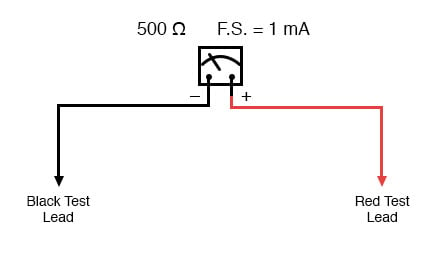
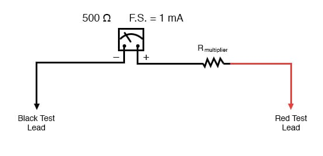
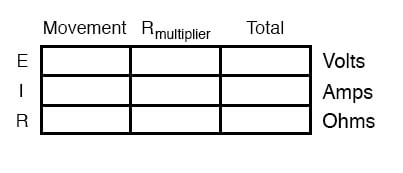
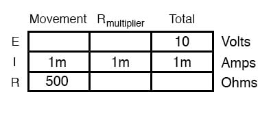
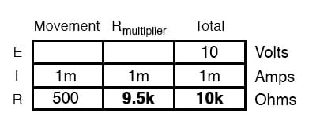
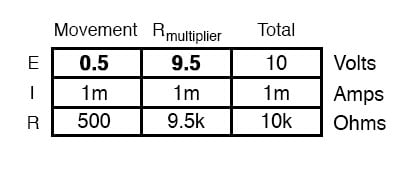
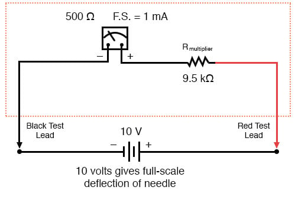
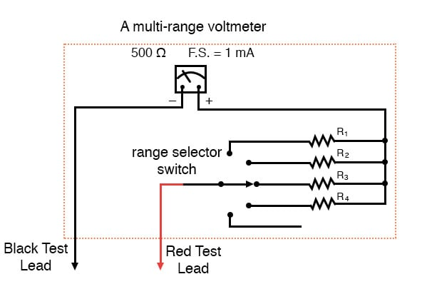
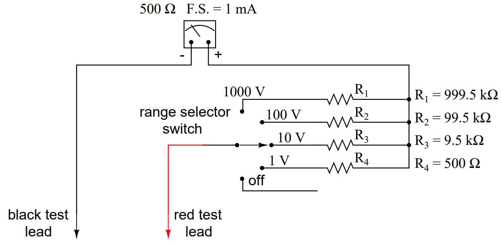
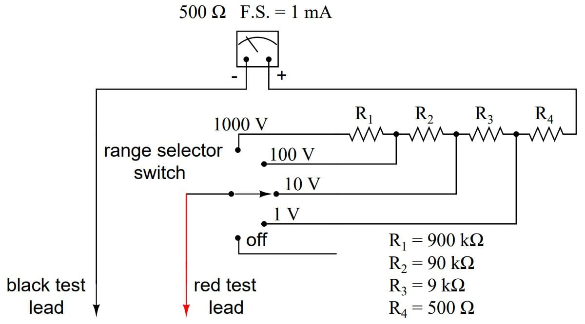

As was stated earlier, most meter movements are sensitive devices. Some D’Arsonval movements have full-scale deflection current ratings as little as 50 µA, with an (internal) wire resistance of less than 1000 Ω. This makes for a voltmeter with a full-scale rating of only 50 millivolts (50 µA X 1000 Ω)! In order to build voltmeters with practical (higher voltage) scales from such sensitive movements, we need to find some way to reduce the measured quantity of voltage down to a level the movement can handle.
Let’s start our example problems with a D’Arsonval meter movement having a full-scale deflection rating of 1 mA and a coil resistance of 500 Ω:

Using Ohm’s Law (E=IR), we can determine how much voltage will drive this meter movement directly to full scale:
E = I R E = (1 mA)(500 Ω) E = 0.5 volts
If all we wanted was a meter that could measure 1/2 of a volt, the bare meter movement we have here would suffice. But to measure greater levels of voltage, something more is needed. To get an effective voltmeter meter range in excess of 1/2 volt, we’ll need to design a circuit allowing only a precise proportion of measured voltage to drop across the meter movement.
This will extend the meter movement’s range to higher voltages. Correspondingly, we will need to re-label the scale on the meter face to indicate its new measurement range with this proportioning circuit connected.
But how do we create the necessary proportioning circuit? Well, if our intention is to allow this meter movement to measure a greater voltage than it does now, what we need is a voltage divider circuit to proportion the total measured voltage into a lesser fraction across the meter movement’s connection points. Knowing that voltage divider circuits are built from series resistances, we’ll connect a resistor in series with the meter movement (using the movement’s own internal resistance as the second resistance in the divider):

The series resistor is called a “multiplier” resistor because it multiplies the working range of the meter movement as it proportionately divides the measured voltage across it. Determining the required multiplier resistance value is an easy task if you’re familiar with series circuit analysis.
For example, let’s determine the necessary multiplier value to make this 1 mA, 500 Ω movement read exactly full-scale at an applied voltage of 10 volts. To do this, we first need to set up an E/I/R table for the two series components:

Knowing that the movement will be at full-scale with 1 mA of current going through it, and that we want this to happen at an applied (total series circuit) voltage of 10 volts, we can fill in the table as such:

There are a couple of ways to determine the resistance value of the multiplier. One way is to determine total circuit resistance using Ohm’s Law in the “total” column (R=E/I), then subtract the 500 Ω of the movement to arrive at the value for the multiplier:

Another way to figure the same value of resistance would be to determine voltage drop across the movement at full-scale deflection (E=IR), then subtract that voltage drop from the total to arrive at the voltage across the multiplier resistor. Finally, Ohm’s Law could be used again to determine resistance (R=E/I) for the multiplier:

Either way provides the same answer (9.5 kΩ), and one method could be used as verification for the other, to check accuracy of work.

With exactly 10 volts applied between the meter test leads (from some battery or precision power supply), there will be exactly 1 mA of current through the meter movement, as restricted by the “multiplier” resistor and the movement’s own internal resistance. Exactly 1/2 volt will be dropped across the resistance of the movement’s wire coil, and the needle will be pointing precisely at full-scale. Having re-labeled the scale to read from 0 to 10 V (instead of 0 to 1 mA), anyone viewing the scale will interpret its indication as ten volts.
Please take note that the meter user does not have to be aware at all that the movement itself is actually measuring just a fraction of that ten volts from the external source. All that matters to the user is that the circuit as a whole functions to accurately display the total, applied voltage.
This is how practical electrical meters are designed and used: a sensitive meter movement is built to operate with as little voltage and current as possible for maximum sensitivity, then it is “fooled” by some sort of divider circuit built of precision resistors so that it indicates full-scale when a much larger voltage or current is impressed on the circuit as a whole. We have examined the design of a simple voltmeter here. Ammeters follow the same general rule, except that parallel-connected “shunt” resistors are used to create a current divider circuit as opposed to the series-connected voltage divider “multiplier” resistors used for voltmeter designs.
Generally, it is useful to have multiple ranges established for an electromechanical meter such as this, allowing it to read a broad range of voltages with a single movement mechanism. This is accomplished through the use of a multi-pole switch and several multiplier resistors, each one sized for a particular voltage range:

The five-position switch makes contact with only one resistor at a time. In the bottom (full clockwise) position, it makes contact with no resistor at all, providing an “off” setting. Each resistor is sized to provide a particular full-scale range for the voltmeter, all based on the particular rating of the meter movement (1 mA, 500 Ω). The end result is a voltmeter with four different full-scale ranges of measurement. Of course, in order to make this work sensibly, the meter movement’s scale must be equipped with labels appropriate for each range.
With such a meter design, each resistor value is determined by the same technique, using a known total voltage, movement full-scale deflection rating, and movement resistance. For a voltmeter with ranges of 1 volt, 10 volts, 100 volts, and 1000 volts, the multiplier resistances would be as follows:

Note the multiplier resistor values used for these ranges, and how odd they are. It is highly unlikely that a 999.5 kΩ precision resistor will ever be found in a parts bin, so voltmeter designers often opt for a variation of the above design which uses more common resistor values:

With each successively higher voltage range, more multiplier resistors are pressed into service by the selector switch, making their series resistances add for the necessary total. For example, with the range selector switch set to the 1000 volt position, we need a total multiplier resistance value of 999.5 kΩ. With this meter design, that’s exactly what we’ll get:
RTotal = R4 + R3 + R2 + R1 RTotal = 900 kΩ + 90 kΩ + 9 kΩ + 500 Ω RTotal = 999.5 kΩ
The advantage, of course, is that the individual multiplier resistor values are more common (900k, 90k, 9k) than some of the odd values in the first design (999.5k, 99.5k, 9.5k). From the perspective of the meter user, however, there will be no discernible difference in function.
REVIEW: